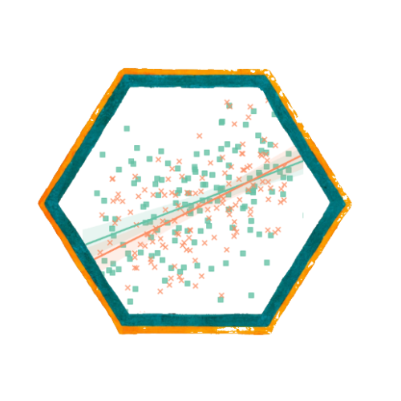
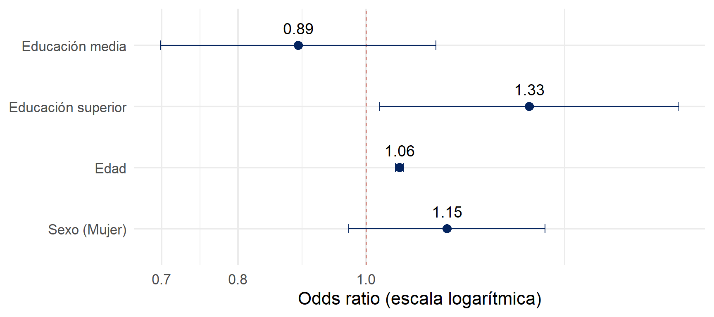
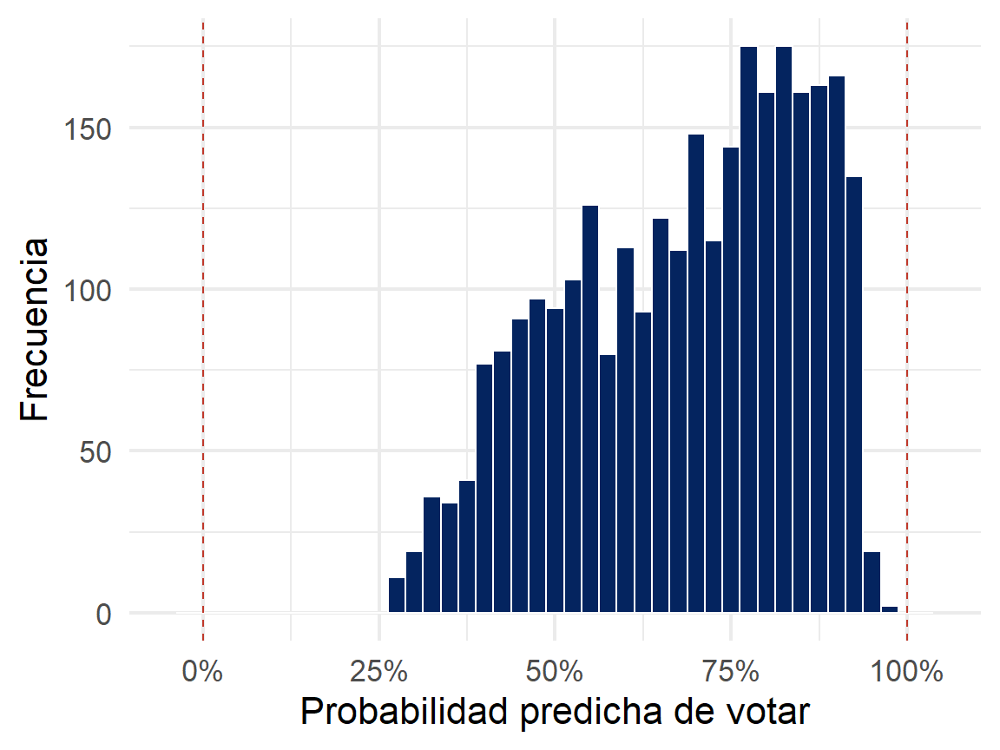
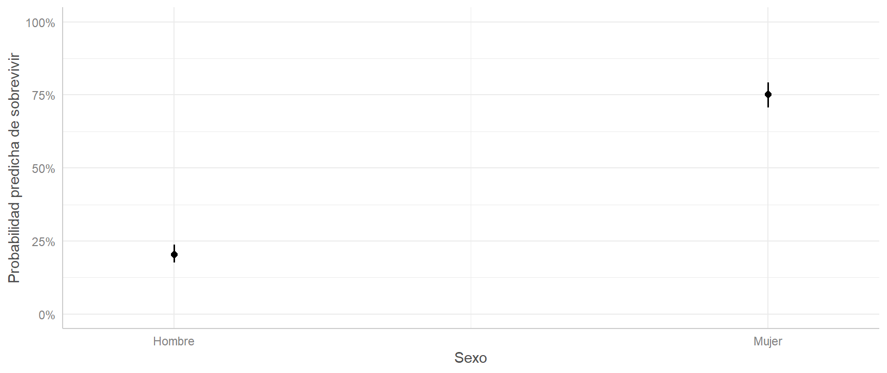
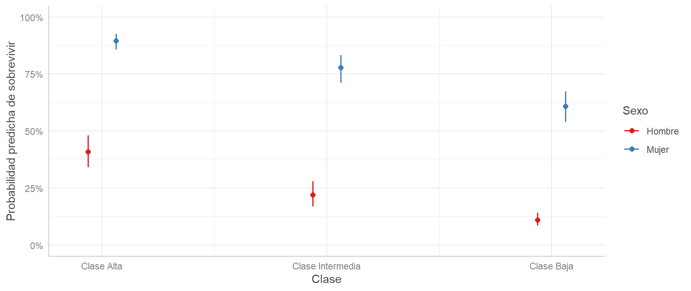
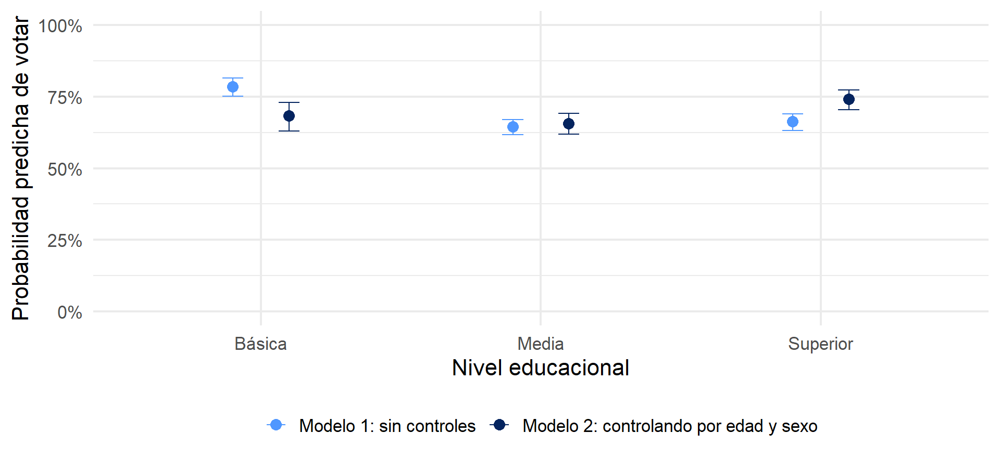
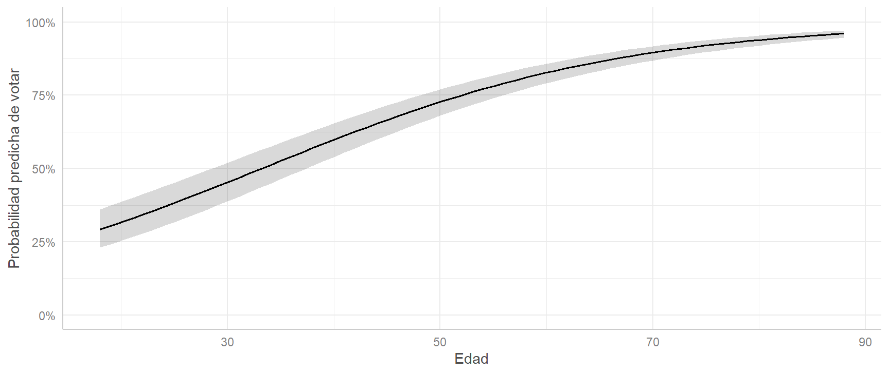
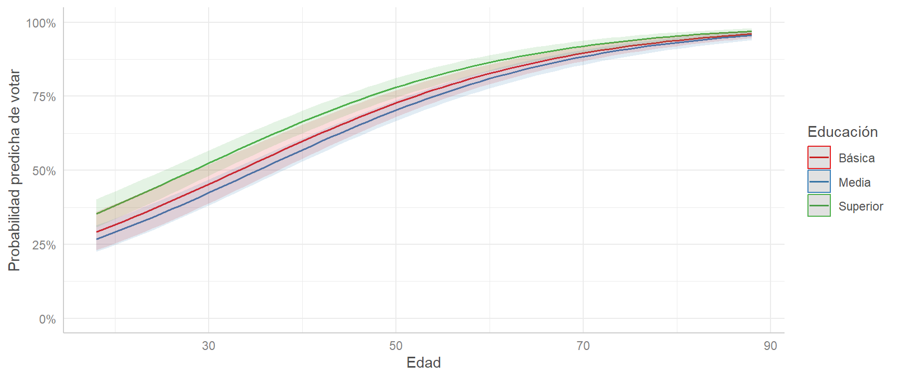
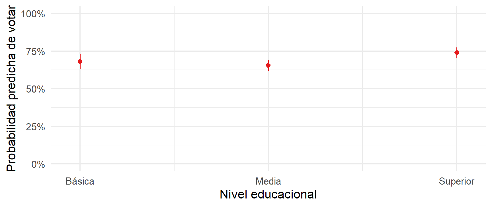
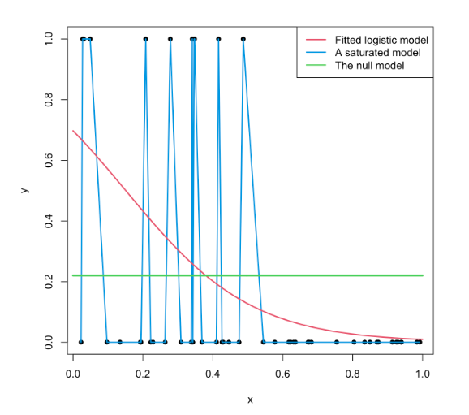

tt <- tt %>%
mutate(pclass = factor(pclass,
levels = c("Clase Alta",
"Clase Intermedia",
"Clase Baja")))
modelo_titanic3 <- glm(survived ~ sex + pclass,
data = tt,
family = "binomial")
Métodos estadísticos para
Kevin Carrasco
Sociología - UNAB
2do Sem 2026
https://metod3-unab.netlify.app/
Sesión 9
Regresión logística: modelos múltiples, probabilidades predichas y ajuste
¿Dónde quedamos?
La regresión logística estima el logit: el logaritmo de los odds
Del coeficiente logit leemos signo y significación
Para interpretar la magnitud, exponenciamos el coeficiente y obtenemos un odds ratio
En el ejemplo de participación electoral quedó una pregunta abierta: ¿qué ocurre con el efecto de la educación al controlar por edad?
Hoy
Regresión logística múltiple
Del logit a la probabilidad
Probabilidades predichas en R con
ggeffectsEl efecto no constante de los predictores sobre la probabilidad
Ajuste de la regresión logística
Tres escalas para lo mismo
| Probabilidad | Odds | Logit | |
|---|---|---|---|
| Fórmula | \(p\) | \(\frac{p}{1-p}\) | \(ln\left(\frac{p}{1-p}\right)\) |
| Rango | 0 a 1 | 0 a \(+\infty\) | \(-\infty\) a \(+\infty\) |
| Sin asociación | OR = 1 | \(\beta\) = 0 | |
| ¿Para qué la usamos? | Comunicar resultados | Interpretar coeficientes (OR) | Es lo que estima el modelo |
El modelo trabaja en logits. Nosotros podemos movernos entre las tres escalas en ambas direcciones
Ida y vuelta
De la probabilidad al logit
\[Odds=\frac{p}{1-p}\]
\[logit=ln(Odds)\]
Del logit a la probabilidad
\[Odds=e^{logit}\]
\[p=\frac{Odds}{1+Odds}=\frac{e^{logit}}{1+e^{logit}}\]
La sesión pasada recorrimos el camino de ida. Hoy recorremos el de vuelta
Regresión logística múltiple
Regresión logística múltiple
- Igual que en regresión lineal, podemos incluir varios predictores en el modelo
\[ln\left(\frac{p}{1-p}\right)=\beta_0+\beta_1X_1+\beta_2X_2+...+\beta_kX_k\]
Cada coeficiente se interpreta controlando por los demás predictores, es decir, manteniéndolos constantes
La sintaxis en R es la misma: se agregan predictores con
+
Titanic: sexo y clase
Ordenamos los niveles de pclass para que la categoría de referencia sea la clase alta
| Modelo 1 | Modelo 2 | |
|---|---|---|
| Predictores | OR | OR |
| (Intercepto) | 0.258 *** | 0.692 * |
| Sexo (Mujer) | 11.784 *** | 12.530 *** |
| Clase intermedia | 0.407 *** | |
| Clase baja | 0.179 *** | |
| Observations | 1046 | 1046 |
| * p<0.05 ** p<0.01 *** p<0.001 | ||
Interpretación
Sexo: controlando por clase, las chances de sobrevivir de las mujeres son 12.53 veces las de los hombres
Clase intermedia (ref = clase alta): controlando por sexo, sus chances de sobrevivir son 0.407 veces las de la clase alta, es decir, un 59% menos
Clase baja: sus chances son 0.179 veces las de la clase alta, un 82% menos
Todos los coeficientes son estadísticamente significativos (\(p<0.001\))
El OR de sexo casi no cambia al controlar por clase
La ventaja de las mujeres no se explica por su distribución entre las clases
En el ejemplo de participación electoral, en cambio, el control sí modifica los resultados
Volviendo a la paradoja
| Nivel educacional | % votó | Odds | OR | Edad promedio |
|---|---|---|---|---|
| Básica | 78.5 | 3.645 | 1.00 | 56.2 |
| Media | 64.4 | 1.809 | 0.50 | 45.6 |
| Superior | 66.2 | 1.959 | 0.54 | 40.6 |
En el análisis bivariado, quienes tienen educación básica presentan las mayores chances de votar
Pero también son, en promedio, mucho mayores, y la edad es un predictor fuerte de la participación
Los modelos
m_educ <- glm(voto ~ educ_f, data = elsoc, family = "binomial")
m_mult <- glm(voto ~ educ_f + edad + sexo_f, data = elsoc, family = "binomial")
tab_model(m_educ, m_mult)Modelo 1: solo nivel educacional. Reproduce los OR de la tabla de contingencia
Modelo 2: agrega edad y sexo como controles
Resultados (odds ratio)
| Modelo 1 | Modelo 2 | |
|---|---|---|
| Predictores | OR | OR |
| (Intercepto) | 3.645 *** | 0.144 *** |
| Educación media | 0.496 *** | 0.888 |
| Educación superior | 0.537 *** | 1.330 * |
| Edad | 1.060 *** | |
| Sexo (Mujer) | 1.152 | |
| Observations | 2894 | 2894 |
| * p<0.05 ** p<0.01 *** p<0.001 | ||
Interpretación
Educación superior (ref = básica): controlando por edad y sexo, las chances de votar de quienes tienen educación superior son 1.33 veces las de quienes tienen educación básica, es decir, un 33% más. Es estadísticamente significativo (\(p<0.05\))
Educación media: OR de 0.89, no significativo. No hay diferencias con educación básica una vez que controlamos por edad y sexo
Edad: cada año adicional aumenta las chances de votar en un 6%, manteniendo constantes educación y sexo
Sexo: las mujeres presentan un OR de 1.15, pero la diferencia no es significativa
Al controlar por edad, el efecto de la educación se invierte
Ahora sí coincide con lo que predice la teoría: a mayor educación, mayores chances de votar
¿Y el sexo?
En el análisis bivariado, el OR de mujer era 1.25 y estadísticamente significativo
En el modelo múltiple baja a 1.15 y deja de ser significativo
Una parte de esa diferencia se explicaba por la composición de edad y educación de hombres y mujeres en la muestra
Es la misma lógica de la parcialización que vimos en regresión lineal: el coeficiente de un predictor cambia cuando se incorporan otros que están relacionados con él y con la dependiente
Gráfico de coeficientes

Un coeficiente es significativo cuando su intervalo de confianza no cruza la línea del 1. En R, un gráfico similar se obtiene rápidamente con plot_model(m_mult) del paquete sjPlot
Del logit a la probabilidad
El OR de educación superior es 1.33
¿Significa que la probabilidad de votar es un 33% mayor?
No. Significa que las chances (odds) son un 33% mayores
Odds no son probabilidades
Confundir odds con probabilidades es el error más frecuente al interpretar una regresión logística
El OR es una medida relativa: dice cuánto se multiplican las chances, pero no cuál es el punto de partida
Para decir algo como “una persona con tales características tiene un X% de probabilidad de votar” necesitamos las probabilidades predichas
Un mismo OR, distintos cambios en la probabilidad
| Probabilidad inicial | Odds inicial | Odds × 2 | Probabilidad final | Cambio (puntos %) |
|---|---|---|---|---|
| 0.01 | 0.010 | 0.020 | 0.020 | 0.980 |
| 0.10 | 0.111 | 0.222 | 0.182 | 8.182 |
| 0.25 | 0.333 | 0.667 | 0.400 | 15.000 |
| 0.50 | 1.000 | 2.000 | 0.667 | 16.667 |
| 0.75 | 3.000 | 6.000 | 0.857 | 10.714 |
| 0.90 | 9.000 | 18.000 | 0.947 | 4.737 |
En todos los casos el OR es 2, pero el cambio en la probabilidad va desde 1 punto porcentual hasta casi 17. Depende de dónde se parte
Paso 1: el logit predicho
- Igual que en regresión lineal, el modelo entrega un valor predicho reemplazando los valores de las variables en la ecuación, solo que aquí ese valor está en logits
\[logit(\hat{p})=\beta_0+\beta_1X_1+...+\beta_kX_k\]
Titanic, modelo con sexo:
Hombres: -1.354 + (2.467 × 0) = -1.354
Mujeres: -1.354 + (2.467 × 1) = 1.112
Paso 2: de logits a odds
- Exponenciamos el logit predicho
\[Odds=e^{logit}\]
\[Odds_{hombres}=e^{-1.354}=0.258\]
\[Odds_{mujeres}=e^{1.112}=3.042\]
Son los mismos odds que calculamos desde la tabla de contingencia
Paso 3: de odds a probabilidades
\[p=\frac{Odds}{1+Odds}=\frac{e^{logit}}{1+e^{logit}}\]
\[p_{hombres}=\frac{0.258}{1+0.258}=0.205\]
\[p_{mujeres}=\frac{3.042}{1+3.042}=0.753\]
La probabilidad predicha de sobrevivir es de 20.5% para los hombres y de 75.3% para las mujeres
¿Y cuáles eran las proporciones observadas de sobrevivencia?
Hombres: 20.5% / Mujeres: 75.3%
Con un único predictor dicotómico, las probabilidades predichas reproducen las proporciones de cada grupo, igual que en regresión lineal el valor predicho de una dummy era el promedio de cada grupo
En R: predict()
predict(modelo_titanic,
newdata = data.frame(sex = c("Hombre", "Mujer")),
type = "response")
#> 1 2
#> 0.2051672 0.7525773newdataindica los valores de las independientes para los que queremos la prediccióntype = "response"pide la predicción en la escala de la probabilidadSin ese argumento,
predict()entrega los logits
Predicciones para todos los casos
elsoc$prob_pred <- predict(m_mult,
type = "response")
summary(elsoc$prob_pred)
#> Min. 1st Qu. Median Mean 3rd Qu. Max.
#> 0.2678 0.5453 0.7084 0.6821 0.8269 0.9741Sin newdata, predict() calcula la probabilidad predicha de cada persona de la muestra según sus propios valores en las independientes
#> Warning: Removed 2 rows containing missing values or values outside the scale range
#> (`geom_bar()`).
¿Y con el modelo de probabilidad lineal?
lpm_mult <- lm(voto ~ educ_f + edad + sexo_f, data = elsoc)
summary(fitted.values(lpm_mult))
#> Min. 1st Qu. Median Mean 3rd Qu. Max.
#> 0.3195 0.5455 0.6801 0.6821 0.8076 1.2031
sum(fitted.values(lpm_mult) > 1 | fitted.values(lpm_mult) < 0)
#> [1] 47Con los mismos datos y predictores, el modelo lineal entrega 47 casos con probabilidades predichas mayores a 1. La regresión logística, ninguno
Probabilidades predichas con ggeffects
ggpredict()
library(ggeffects)
ggpredict(modelo_titanic,
terms = "sex")La misma función que usamos con regresión lineal. Con un modelo logístico, entrega directamente probabilidades, con sus intervalos de confianza
| Sexo | Probabilidad | IC inferior | IC superior |
|---|---|---|---|
| Hombre | 0.205 | 0.176 | 0.238 |
| Mujer | 0.753 | 0.707 | 0.793 |
El gráfico
plot(pred_tt) +
scale_y_continuous(limits = c(0, 1), labels = scales::percent) +
labs(title = NULL, x = "Sexo", y = "Probabilidad predicha de sobrevivir")
#> Scale for y is already present.
#> Adding another scale for y, which will replace the existing scale.
Como en regresión lineal, el eje \(y\) muestra el rango completo de la variable: de 0% a 100%
Dos predictores categóricos
plot(ggpredict(modelo_titanic3, terms = c("pclass", "sex"))) +
scale_y_continuous(limits = c(0, 1), labels = scales::percent) +
labs(title = NULL, x = "Clase", y = "Probabilidad predicha de sobrevivir", color = "Sexo")
#> Scale for y is already present.
#> Adding another scale for y, which will replace the existing scale.
Cómo leerlo
El primer término de
termsva en el eje \(x\); el segundo, en los coloresUna mujer de clase alta tiene una probabilidad predicha de sobrevivir de 90%
Un hombre de clase baja, de 11%
Los OR de clase son los mismos para hombres y mujeres, pero la distancia en puntos porcentuales cambia: entre clase alta e intermedia es de 19 puntos para los hombres y de 12 para las mujeres
Participación electoral
Un perfil, paso a paso
¿Cuál es la probabilidad predicha de votar de una mujer de 25 años con educación superior?
\[logit=-1.939+0.285(1)+0.0584(25)+0.141(1)=-0.052\]
\[p=\frac{e^{-0.052}}{1+e^{-0.052}}=0.487\]
Una mujer de 25 años con educación superior tiene una probabilidad predicha de votar de 48.7%
El mismo perfil, a los 65 años
\[logit=-1.939+0.285(1)+0.0584(65)+0.141(1)=2.284\]
\[p=\frac{e^{2.284}}{1+e^{2.284}}=0.908\]
perfiles <- data.frame(educ_f = "Superior",
edad = c(25, 65),
sexo_f = "Mujer")
predict(m_mult, newdata = perfiles, type = "response")
#> 1 2
#> 0.4870457 0.907559640 años de diferencia significan pasar de 49% a 91% de probabilidad de votar
Ejercicio
¿Cuál es la probabilidad predicha de votar de un hombre de 40 años con educación media?
| Término | Coeficiente logit |
|---|---|
| Intercepto | -1.9386 |
| Educación media | -0.1184 |
| Educación superior | 0.2853 |
| Edad | 0.0584 |
| Sexo (Mujer) | 0.1414 |
Solución
Logit: -1.939 + (-0.118 × 1) + (0.0584 × 40) + (0.141 × 0) = 0.279
Odds: \(e^{0.279}=1.322\)
Probabilidad: \(\frac{1.322}{1+1.322}=0.569\)
Un hombre de 40 años con educación media tiene una probabilidad predicha de votar de 56.9%
Probabilidades predichas según educación
ggpredict(m_mult,
terms = "educ_f")ggpredictfija las demás variables: las continuas en su promedio (edad = 46.3 años) y las categóricas en su categoría de referencia (hombre)Es decir, compara niveles educacionales entre personas de la misma edad y sexo
| Educación | Probabilidad | IC inferior | IC superior |
|---|---|---|---|
| Básica | 0.682 | 0.630 | 0.729 |
| Media | 0.656 | 0.618 | 0.691 |
| Superior | 0.740 | 0.704 | 0.774 |
Antes y después de controlar

Sin controles, las probabilidades predichas reproducen el porcentaje de votantes de cada grupo. Al controlar por edad, educación superior pasa a tener la mayor probabilidad
Probabilidades predichas según edad
plot(ggpredict(m_mult, terms = "edad [18:88]")) +
scale_y_continuous(limits = c(0, 1), labels = scales::percent) +
labs(title = NULL, x = "Edad", y = "Probabilidad predicha de votar")
#> Scale for y is already present.
#> Adding another scale for y, which will replace the existing scale.
[18:88] pide la predicción para cada edad entre 18 y 88 años. Es una curva, no una recta
El OR de la edad es el mismo para cualquier año: 1.06
Pero ¿el efecto sobre la probabilidad también es el mismo?
El efecto no es constante
| Edad | Probabilidad | Diferencia |
|---|---|---|
| 20 | 0.316 | NA |
| 30 | 0.453 | 0.137 |
| 40 | 0.598 | 0.145 |
| 50 | 0.727 | 0.129 |
| 60 | 0.827 | 0.100 |
| 70 | 0.896 | 0.068 |
| 80 | 0.939 | 0.043 |
Entre los 20 y los 30 años, la probabilidad de votar aumenta 13.7 puntos porcentuales
Entre los 70 y los 80 años, solo 4.3 puntos
Las chances se multiplican siempre por lo mismo, pero el cambio en la probabilidad depende del punto de partida
Cerca de 0 o de 1 la curva se aplana: la probabilidad ya no puede crecer (o bajar) mucho más
En regresión lineal, el efecto de \(x\) es el mismo en todo su rango
En regresión logística, el efecto sobre la probabilidad depende de los valores de todas las variables del modelo
Por eso las probabilidades predichas se reportan para perfiles concretos
Edad y educación a la vez
plot(ggpredict(m_mult, terms = c("edad [18:88]", "educ_f"))) +
scale_y_continuous(limits = c(0, 1), labels = scales::percent) +
labs(title = NULL, x = "Edad", y = "Probabilidad predicha de votar", color = "Educación")
#> Scale for y is already present.
#> Adding another scale for y, which will replace the existing scale.
La distancia entre las curvas es mayor donde la probabilidad está más cerca de 50% (los más jóvenes) y se achica en las edades altas, donde todas se acercan a 1
Tabla de perfiles
ggpredict(m_mult, terms = c("edad [25,45,65]", "educ_f"))| Edad | Básica | Media | Superior |
|---|---|---|---|
| 25 | 0.383 | 0.355 | 0.452 |
| 45 | 0.666 | 0.639 | 0.726 |
| 65 | 0.865 | 0.851 | 0.895 |
Probabilidades predichas de votar para hombres, según edad y nivel educacional
Una alternativa: sjPlot
plot_model(m_mult, type = "pred", terms = "educ_f") +
scale_y_continuous(limits = c(0, 1), labels = scales::percent) +
labs(title = NULL, x = "Nivel educacional", y = "Probabilidad predicha de votar")
#> Scale for y is already present.
#> Adding another scale for y, which will replace the existing scale.
plot_model con type = "pred" usa por dentro ggeffects, por lo que entrega las mismas probabilidades
Cómo reportar
Coeficientes: en odds ratio, indicando significación. “Controlando por edad y sexo, las chances de votar de quienes tienen educación superior son 1.33 veces las de quienes tienen educación básica”
Probabilidades predichas: para perfiles relevantes, en una tabla o un gráfico. “Un hombre de 25 años con educación superior tiene una probabilidad predicha de votar de 45%, frente a un 89% a los 65 años”
Las probabilidades son la forma más comunicable de los resultados
Ajuste
Ajuste: ¿Qué tan bueno es nuestro modelo?
Distinto a regresión OLS: no hay varianza en una dependiente dicotómica, por lo que no existe el \(R^2\) tal como lo conocemos
Para evaluar ajuste se utiliza la log-verosimilitud (log-likelihood), que se asocia a la idea de residuos del modelo
La log-verosimilitud del modelo se obtiene del proceso de estimación por máxima verosimilitud (tema para otro curso)
Log-verosimilitud
logLik(modelo_titanic) # sexo
#> 'log Lik.' -551.0042 (df=2)
logLik(modelo_titanic2) # sexo + edad
#> 'log Lik.' -550.6695 (df=3)La inclusión de un predictor adicional (edad) hace que cambie la log-verosimilitud del modelo. Mientras más cercana a 0, mejor ajuste
Ajuste: ¿Qué tan bueno es nuestro modelo?
No existe una única forma de estimar el ajuste en regresión logística
El ajuste de los modelos logísticos se evalúa en general en términos comparativos con otros modelos
Estas medidas de comparación se basan en distintas fórmulas que consideran la log-verosimilitud (LL) y la devianza
Modelo saturado, nulo y logístico

Indicadores de ajuste
Entre las medidas de ajuste usualmente se consideran:
Devianza
Test de razón de verosimilitud (likelihood ratio test)
Pseudo \(R^2\)
Criterio de información de Akaike (AIC)
Devianza
El modelo saturado es básicamente residuos, y la devianza indica cuánto se han reducido los residuos a medida que se introducen parámetros al modelo. Por eso también se conoce como devianza residual
Fórmula: \(Devianza=-2 \times log\ likelihood\)
-2 * logLik(modelo_titanic)
#> 'log Lik.' 1102.008 (df=2)
modelo_titanic$deviance
#> [1] 1102.008Test de razón de verosimilitud (LRT)
- Se comparan las devianzas de distintos modelos: si la devianza es significativamente menor, el modelo es mejor
anova(modelo_titanic, modelo_titanic2, test = "Chisq")
#> Analysis of Deviance Table
#>
#> Model 1: survived ~ sex
#> Model 2: survived ~ sex + age
#> Resid. Df Resid. Dev Df Deviance Pr(>Chi)
#> 1 1044 1102.0
#> 2 1043 1101.3 1 0.6694 0.4133La diferencia entre los modelos no es estadísticamente significativa. El modelo con dos predictores (sexo + edad) no ofrece un mejor ajuste a los datos que el modelo con solo un predictor (sexo)
Test de razón de verosimilitud
Probemos ahora con el modelo que incorpora la clase
anova(modelo_titanic, modelo_titanic3, test = "Chisq")
#> Analysis of Deviance Table
#>
#> Model 1: survived ~ sex
#> Model 2: survived ~ sex + pclass
#> Resid. Df Resid. Dev Df Deviance Pr(>Chi)
#> 1 1044 1102.0
#> 2 1042 1013.8 2 88.211 < 2.2e-16 ***
#> ---
#> Signif. codes: 0 '***' 0.001 '**' 0.01 '*' 0.05 '.' 0.1 ' ' 1La diferencia es estadísticamente significativa (\(p<0.001\)). El modelo con sexo y clase ofrece un mejor ajuste que el modelo solo con sexo
Comparación con el modelo nulo
- El modelo nulo no tiene predictores, solo intercepto. Es el equivalente a predecir con el promedio en el caso de variables continuas
modelo_titanic_null <- glm(survived ~ 1, data = tt, family = "binomial")
anova(modelo_titanic_null, modelo_titanic3, test = "Chisq")
#> Analysis of Deviance Table
#>
#> Model 1: survived ~ 1
#> Model 2: survived ~ sex + pclass
#> Resid. Df Resid. Dev Df Deviance Pr(>Chi)
#> 1 1045 1414.6
#> 2 1042 1013.8 3 400.82 < 2.2e-16 ***
#> ---
#> Signif. codes: 0 '***' 0.001 '**' 0.01 '*' 0.05 '.' 0.1 ' ' 1McFadden (pseudo) R²
\[R^2_{McFadden}=1-\frac{LL_{modelo}}{LL_{nulo}}\]
logLik(modelo_titanic); logLik(modelo_titanic_null)
#> 'log Lik.' -551.0042 (df=2)
#> 'log Lik.' -707.3102 (df=1)
1 - (-551 / -707)
#> [1] 0.2206506Se usa para comparar modelos. No se interpreta como porcentaje de varianza explicada
McFadden (pseudo) R²
También se puede obtener con la función PseudoR2 de la librería DescTools, junto a otras versiones de pseudo \(R^2\):
DescTools::PseudoR2(modelo_titanic3, which = c("McFadden", "Nagelkerke", "CoxSnell"))
#> McFadden Nagelkerke CoxSnell
#> 0.2833433 0.4293605 0.3183209Akaike (AIC)
- Evalúa la calidad del modelo a través de la comparación con otros modelos, penalizando por la inclusión de predictores (análogo al \(R^2\) ajustado)
\[AIC=-2(log\ likelihood)+2K\]
Donde K = número de parámetros del modelo (predictores + intercepto). A menor AIC, mejor ajuste
\[AIC_{sexo}=-2(-551)+2(2)=1102+4=1106\]
Akaike (AIC)
AIC(modelo_titanic, modelo_titanic2, modelo_titanic3)
#> df AIC
#> modelo_titanic 2 1106.008
#> modelo_titanic2 3 1107.339
#> modelo_titanic3 4 1021.797Agregar edad aumenta el AIC: el predictor adicional no compensa la penalización
Agregar clase lo reduce de forma importante: es el modelo con mejor ajuste
Aplicado a la participación electoral
anova(m_educ, m_educ_edad, m_mult, test = "Chisq")
#> Analysis of Deviance Table
#>
#> Model 1: voto ~ educ_f
#> Model 2: voto ~ educ_f + edad
#> Model 3: voto ~ educ_f + edad + sexo_f
#> Resid. Df Resid. Dev Df Deviance Pr(>Chi)
#> 1 2891 3575.0
#> 2 2890 3223.3 1 351.71 <2e-16 ***
#> 3 2889 3220.7 1 2.62 0.1058
#> ---
#> Signif. codes: 0 '***' 0.001 '**' 0.01 '*' 0.05 '.' 0.1 ' ' 1anova puede comparar varios modelos a la vez, cada uno con el anterior. Agregar la edad mejora significativamente el ajuste; agregar sexo, no
Resumen de ajuste: participación electoral
| Modelo | Log-verosimilitud | Devianza | AIC | McFadden R² |
|---|---|---|---|---|
| Nulo | -1809.548 | 3619.096 | 3621.096 | 0.000 |
| Educación | -1787.492 | 3574.985 | 3580.985 | 0.012 |
| Educación + edad | -1611.636 | 3223.273 | 3231.273 | 0.109 |
| Educación + edad + sexo | -1610.328 | 3220.657 | 3230.657 | 0.110 |
El gran salto en el ajuste ocurre al incorporar la edad
Sexo prácticamente no cambia la log-verosimilitud ni el AIC
Resumen ajuste
Diferentes aproximaciones
Utilizar más de una forma
En general: LRT (test de razón de verosimilitud) y algún tipo de pseudo \(R^2\)
Resumen
La regresión logística múltiple permite el control estadístico: cada OR se interpreta manteniendo constantes los demás predictores
Los odds ratio indican cuánto se multiplican las chances, pero no son probabilidades
Las probabilidades predichas se obtienen transformando el logit: \(p=\frac{e^{logit}}{1+e^{logit}}\)
El efecto de un predictor sobre la probabilidad no es constante: depende del perfil, por lo que se reporta para valores concretos
El ajuste se evalúa comparando modelos mediante la log-verosimilitud
Siguiente sesión
- Prueba 2